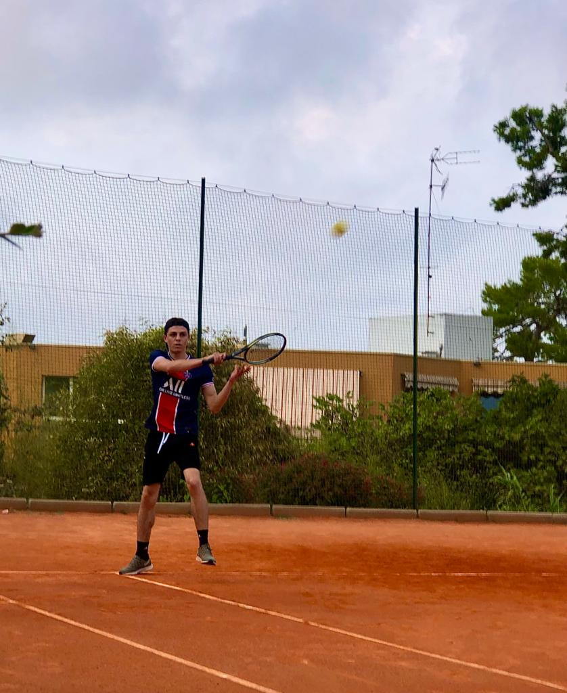
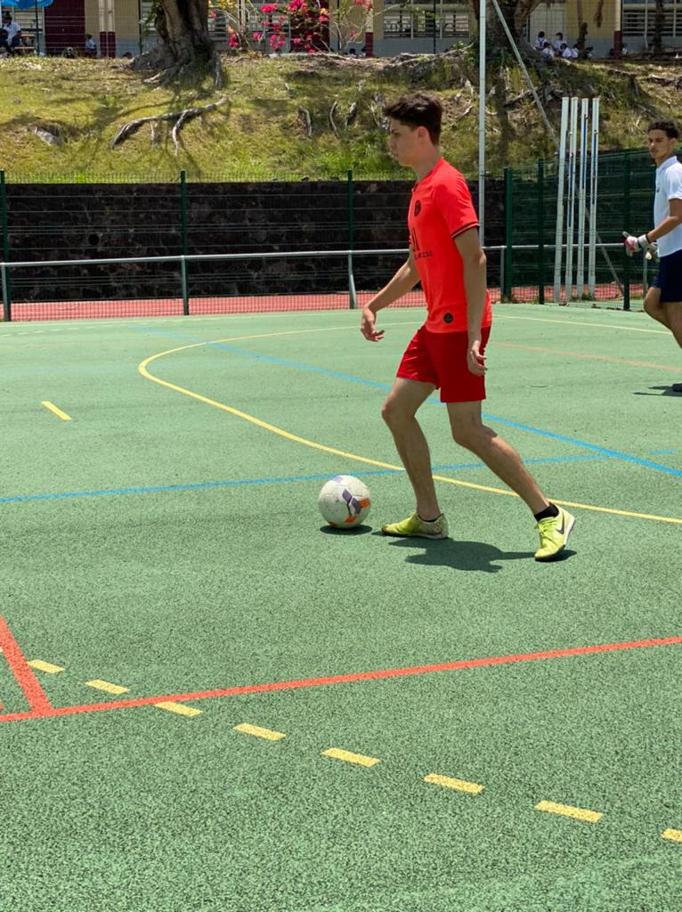

Jonathan Jaar
Je viens de Martinique, et je suis en 1ère année à l'EFJ à Paris
Mes centres d'intérêts
Je suis passioné de sport depuis le plus jeune âge, en grande partie du football.
Je passe mon temps libre à m'entrainer ou regarder des matchs et compétitions sportives


Ce que j'aime faire
- jouer aux jeux-vidéos
- sortir avec des potes et s'amuser
- aller à a plage
- faire la mala
Mes expériences
- stage à l'aéroport Aimé Césaire de Martinique
- voyages linguistiques avec EF à Brighton et Oxford
- stage dans un magasin de sport
- stages à l'académie du PSG